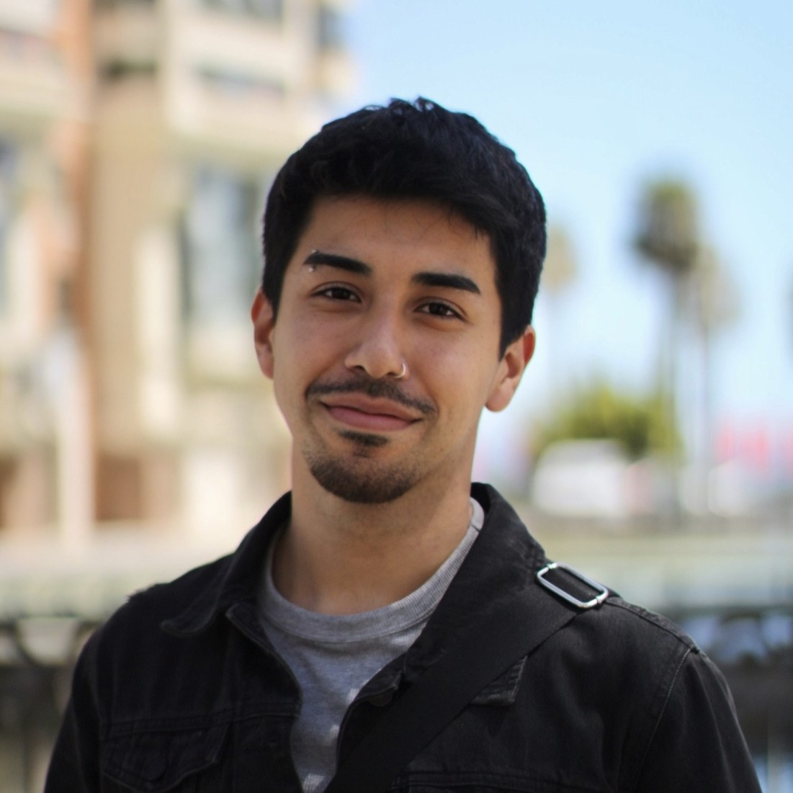

Profesor agregado / e[ad] PUCV
Docencia de primer año, observación, fundamento y forma.
Viña del MarSoy diseñador de interacción PUCV. Trabajo entre diseño digital, investigación-creación, sistemas editoriales, visualización y comunicación visual. Desarrollo experiencias claras, funcionales y situadas en su contexto.
↓ Descargar CV en PDF
Docencia de primer año, observación, fundamento y forma.
Viña del MarSistema visual, piezas digitales, fotografía y gráfica de gran formato.
Viña del MarCartografía, visualización y apoyo en levantamiento territorial.
Norte ChicoAtlas del Post-Extractivismo, investigación-creación física y digital.
Chile / BélgicaViña del Mar, Chile
Trabajo remoto y presencial.